facet_wrap(~ var, labeller = label_wrap_gen(width = 25))
Hide legend
geom_point(show.legend = FALSE)
Transparent colors
scales::alpha("blue", 0.5)
Subset in ggplot
data = . %>% filter(condition)
Setup: Load Data and Create Summary
We’ll use a dataset of news headlines about ChatGPT/AI collected from Media Cloud to demonstrate each tip. First, let’s load the data and create a summary tibble.
library(tidyverse)library(scales)# Load the headlines dataheadlines <-read_csv("data/mc-onlinenews-mediacloud-20250604193447-chatgpt-headlines.csv")# Create a summary: count articles by media outletoutlet_summary <- headlines %>%mutate(outlet =str_remove(media_url, "\\.com$|\\.org$|\\.net$")) %>%count(outlet, name ="n_articles") %>%slice_max(n_articles, n =12) %>%mutate(outlet_label =case_when( outlet =="theguardian"~"The Guardian", outlet =="forbes"~"Forbes", outlet =="cnet"~"CNET", outlet =="techcrunch"~"TechCrunch Startup Coverage", outlet =="zdnet"~"ZDNet", outlet =="businessinsider"~"Business Insider Financial News", outlet =="techradar"~"TechRadar", outlet =="theconversation"~"The Conversation", outlet =="cbsnews"~"CBS News", outlet =="cnbc"~"CNBC", outlet =="reuters"~"Reuters",TRUE~ outlet ) )# Preview the dataoutlet_summary
# Parse dates and count by daydaily_counts <- headlines %>%mutate(date =mdy(publish_date) ) %>%filter(!is.na(date), date >="2024-11-01") %>%count(date, name ="n_articles")head(daily_counts)
# A tibble: 6 x 2
date n_articles
<date> <int>
1 2024-11-01 80
2 2024-11-02 31
3 2024-11-03 25
4 2024-11-04 51
5 2024-11-05 51
6 2024-11-06 47
Part 1: Data Visualization with ggplot2
Wrapping Long Axis Labels
Problem: Category names overlap on axes
Without the tip:
ggplot(outlet_summary, aes(y = n_articles, x = outlet_label)) +geom_col(fill ="steelblue") +labs(title ="News Coverage of ChatGPT by Media Outlet",y ="Number of Articles",x =NULL )
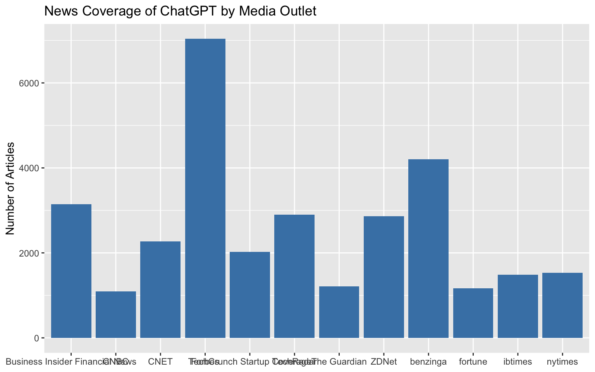
The labels are cut off or overlap because they’re too long.
With the tip applied:
ggplot(outlet_summary, aes(y = n_articles, x = outlet_label)) +geom_col(fill ="steelblue") +scale_x_discrete(labels = scales::label_wrap(15)) +labs(title ="News Coverage of ChatGPT by Media Outlet",y ="Number of Articles",x =NULL )
The scales::label_wrap(15) function breaks long labels into multiple lines at around 20 characters.
Alternative (a classic solution but often will not look great):
ggplot(outlet_summary, aes(y = n_articles, x = outlet_label)) +geom_col(fill ="steelblue") +labs(title ="News Coverage of ChatGPT by Media Outlet",y ="Number of Articles",x =NULL ) +theme(axis.text.x =element_text(angle =45, hjust =1, vjust =1))
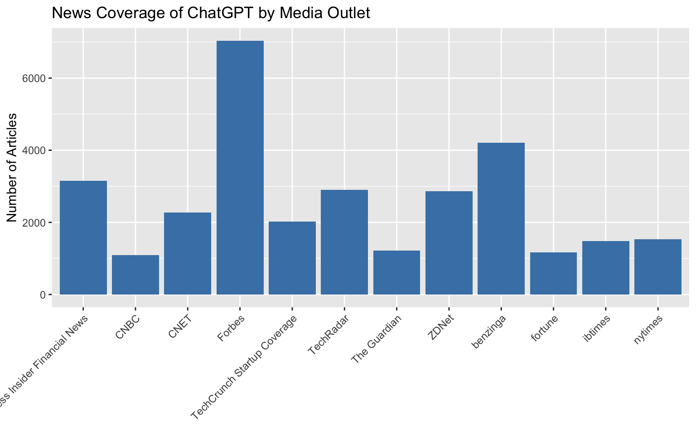
Bonus: Format numbers nicely:
scale_x_continuous(labels = scales::comma)
Getting Rid of Awkward Padding
Problem: Unwanted padding around your plot
ggplot(outlet_summary, aes(x = n_articles, y =reorder(outlet, n_articles))) +geom_col(fill ="steelblue") +labs(x ="Number of Articles", y =NULL)
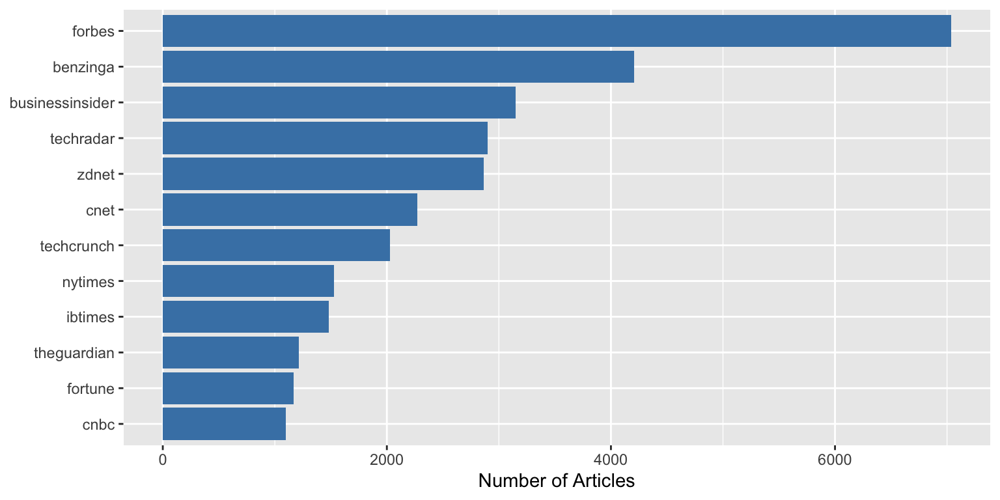
Notice the gap between the bars and the y-axis.
With the tip applied:
ggplot(outlet_summary, aes(x = n_articles, y =reorder(outlet, n_articles))) +geom_col(fill ="steelblue") +scale_x_continuous(expand =c(0, 0)) +labs(x ="Number of Articles", y =NULL)
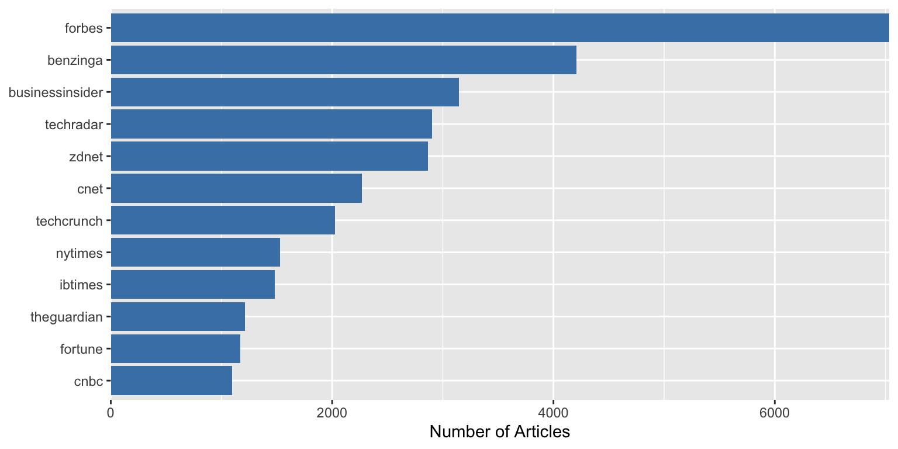
The bars now start directly at the axis with expand = c(0, 0).
Better / different Title Positioning
Problem: Default title positioning leaves awkward spacing
ggplot(outlet_summary, aes(x = n_articles, y =reorder(outlet, n_articles))) +geom_col(fill ="steelblue") +labs(title ="News Coverage of ChatGPT by Media Outlet",subtitle ="Top 12 outlets by article count",x ="Number of Articles",y =NULL )
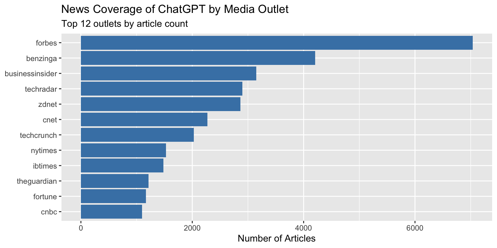
Notice how the title starts at the y-axis, not aligned with the plot area.
With the tip applied:
ggplot(outlet_summary, aes(x = n_articles, y =reorder(outlet, n_articles))) +geom_col(fill ="steelblue") +labs(title ="News Coverage of ChatGPT by Media Outlet",subtitle ="Top 12 outlets by article count",x ="Number of Articles",y =NULL ) +theme(plot.title.position ="plot")
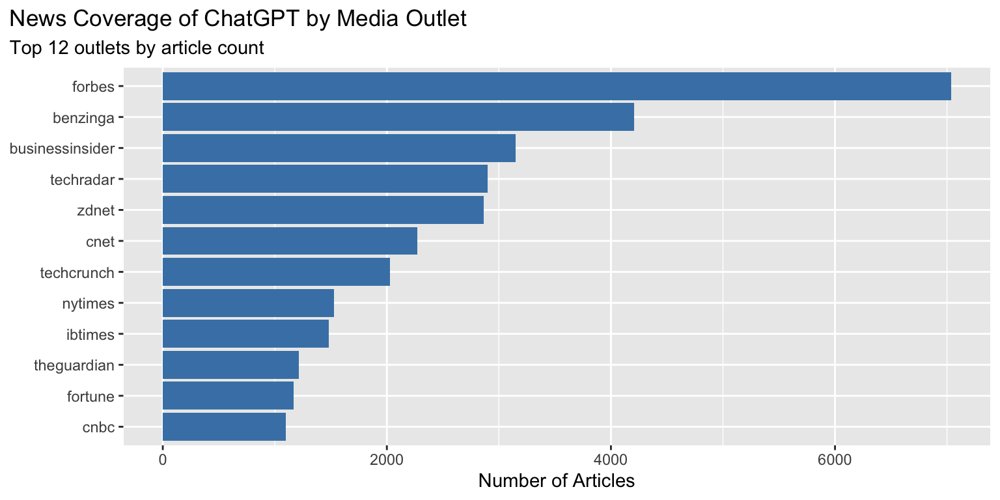
The title now aligns with the left edge of the entire plot area.
Getting Rid of (Some) Gridlines
Problem: Too many gridlines clutter the plot
Usual theme_minimal() rendering:
ggplot(outlet_summary, aes(x = n_articles, y =reorder(outlet, n_articles))) +geom_col(fill ="steelblue") +theme_minimal() +labs(x ="Number of Articles", y =NULL)
With the tip applied:
ggplot(outlet_summary, aes(x = n_articles, y =reorder(outlet, n_articles))) +geom_col(fill ="steelblue") +theme_minimal() +theme(panel.grid.major.y =element_blank(),panel.grid.minor =element_blank() ) +labs(x ="Number of Articles", y =NULL)
Removing the horizontal gridlines makes the chart cleaner when bars already provide visual alignment.
Custom Date Axis Formatting
Problem: Default date formatting doesn’t meet your needs
# A tibble: 3 x 2
category total_articles
<chr> <int>
1 Business 11281
2 Technology 10064
3 General News 9601
The legend order (alphabetical) doesn’t match the bar order (by value):
ggplot(outlet_categories, aes(x = total_articles, y =reorder(category, total_articles), fill = category)) +geom_col() +labs(x ="Total Articles", y =NULL)
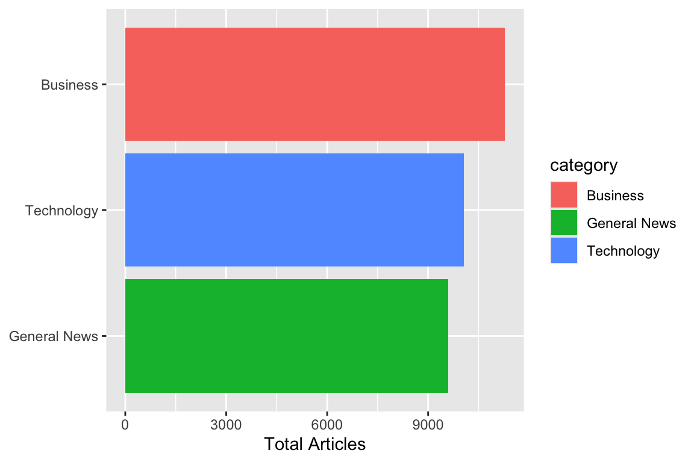
To guarantee the legend colors actually match the bar order, you must relevel the factor for categorybefore plotting, using the ordering variable. This sets the order for both the bars and the legend:
# Set the category factor levels by total_articles (descending)outlet_categories <- outlet_categories %>%mutate(category = forcats::fct_reorder(category, total_articles))ggplot(outlet_categories, aes(x = total_articles, y = category, fill = category)) +geom_col() +labs(x ="Total Articles", y =NULL) +guides(fill =guide_legend(reverse =TRUE))
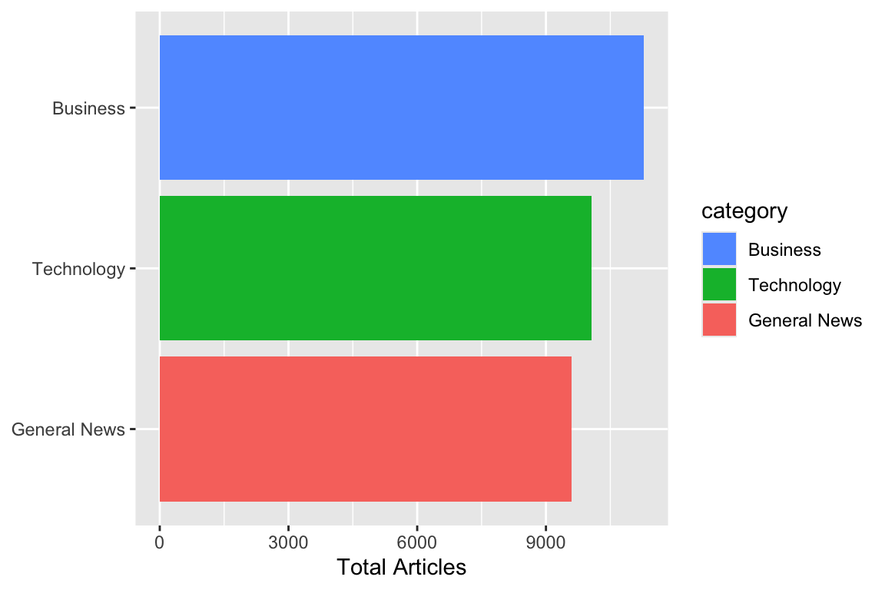
Now the legend order and colors will reflect the bar order exactly.
Wrapping Long Labels in Facets
Problem: Long facet labels overlap or look messy
# Create data with long category names for facetingoutlet_by_category <- headlines %>%mutate(outlet =str_remove(media_url, "\\.com$|\\.org$|\\.net$")) %>%mutate(category =case_when( outlet %in%c("forbes", "businessinsider", "cnbc", "thestreet") ~"Business and Financial News Coverage", outlet %in%c("techcrunch", "zdnet", "cnet", "techradar", "wired") ~"Technology Industry Publications", outlet %in%c("theguardian", "nytimes", "washingtonpost") ~"Major National Newspapers",TRUE~"Other Media Sources" ) ) %>%count(category, outlet) %>%group_by(category) %>%slice_max(n, n =5)
ggplot(outlet_by_category, aes(x = n, y =reorder(outlet, n))) +geom_col(fill ="steelblue") +facet_wrap(~ category, scales ="free_y") +labs(x ="Number of Articles", y =NULL) +theme_bw(base_size=20)
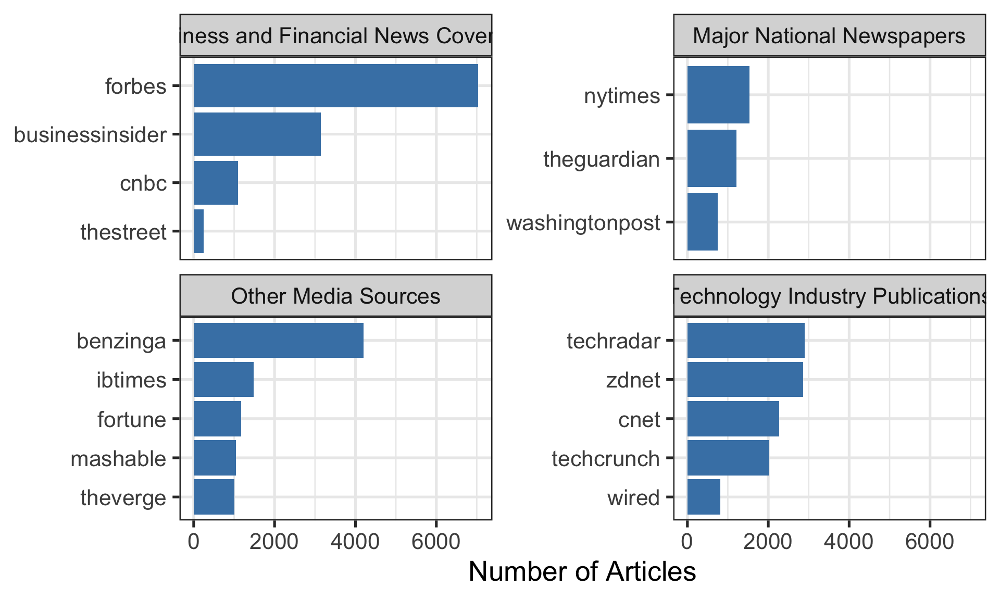
The facet titles are cut off because they’re too long.
Solution
ggplot(outlet_by_category, aes(x = n, y =reorder(outlet, n))) +geom_col(fill ="steelblue") +facet_wrap(~ category, scales ="free_y", labeller =label_wrap_gen(width =25)) +theme(strip.text =element_text(size =9)) +labs(x ="Number of Articles", y =NULL) +theme_bw(base_size=20)
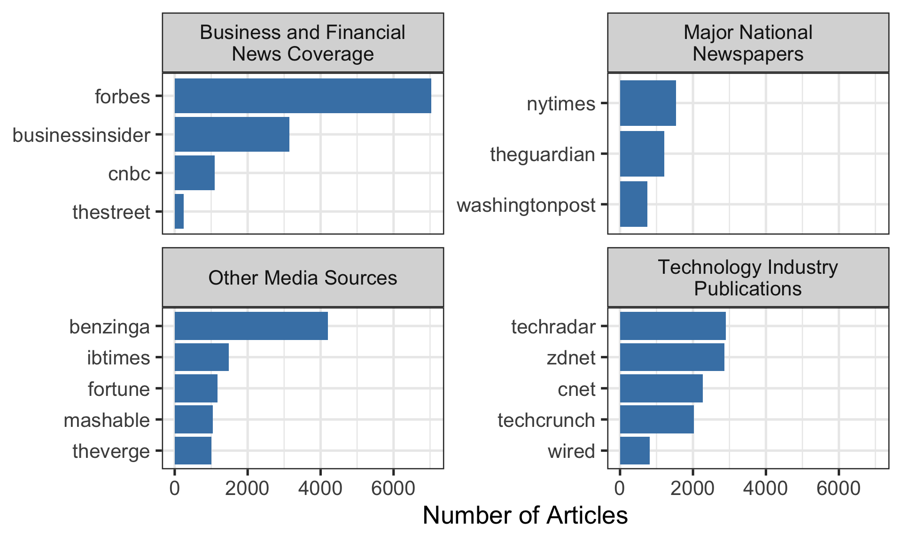
The label_wrap_gen(width = 25) wraps the facet titles at around 25 characters.
Control Legend Visibility
Problem: Unwanted legend entries from specific geoms
top_outlets <- outlet_summary %>%slice_max(n_articles, n =6)ggplot(top_outlets, aes(x = n_articles, y =reorder(outlet, n_articles), fill = outlet)) +geom_col() +geom_text(aes(label = n_articles, color = outlet), hjust =-0.2) +scale_x_continuous(expand =expansion(mult =c(0, 0.15))) +labs(x ="Number of Articles", y =NULL)
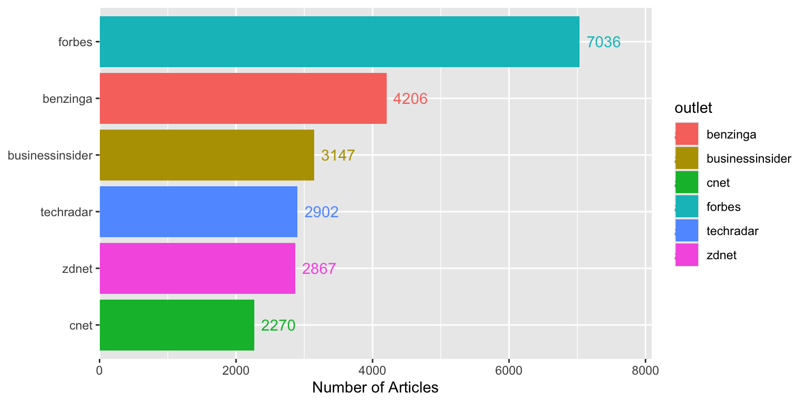
Both the bars and text create legend entries, which is redundant.
With the tip applied:
ggplot(top_outlets, aes(x = n_articles, y =reorder(outlet, n_articles), fill = outlet)) +geom_col() +geom_text(aes(label = n_articles), hjust =-0.2, show.legend =FALSE) +scale_x_continuous(expand =expansion(mult =c(0, 0.15))) +labs(x ="Number of Articles", y =NULL)
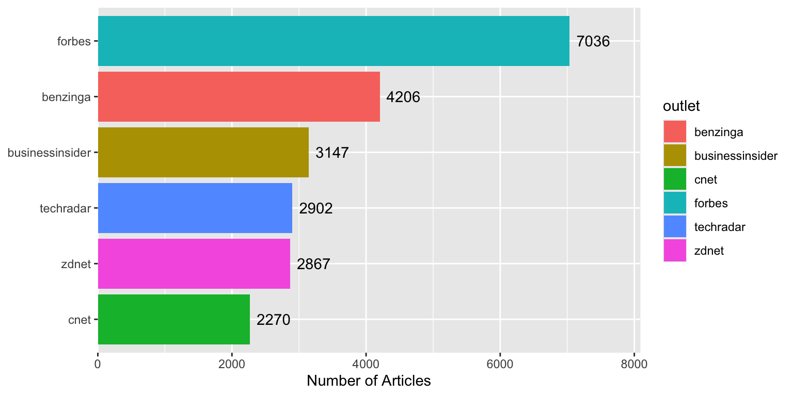
Using show.legend = FALSE removes unnecessary legend entries.
Transparent Colors
Problem: Overlapping points or areas obscure underlying data
# Create some overlapping dataset.seed(42)scatter_data <-tibble(x =rnorm(2500, mean =100, sd =30),y = x +rnorm(2500, mean =0, sd =20))
Using ifelse(n_articles >= 50, ...) ensures we only calculate statistics for outlets with at least 50 articles.
Part 3: External Data Access
Harvard Dataverse Integration
Problem: Need to access publicly available research datasets
Solution:
# Set up connection to Harvard DataverseSys.setenv("DATAVERSE_SERVER"="dataverse.harvard.edu")# Download dataset directly into Rdataset <- dataverse::get_dataframe_by_name("filename.tab","doi:10.7910/DVN/XXXXXX"# Replace with actual DOI)